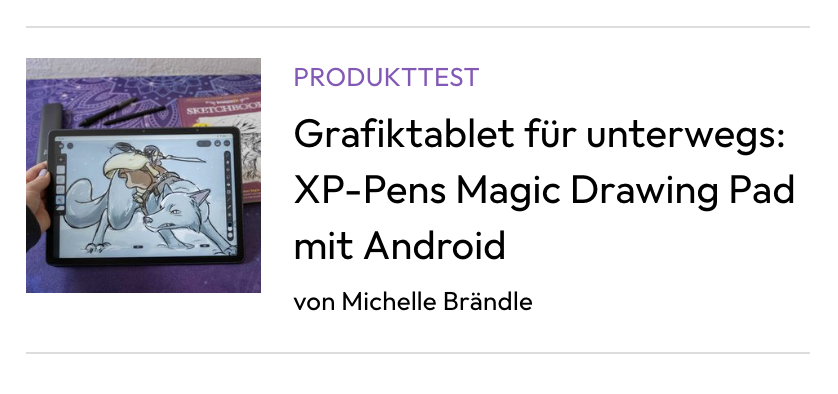
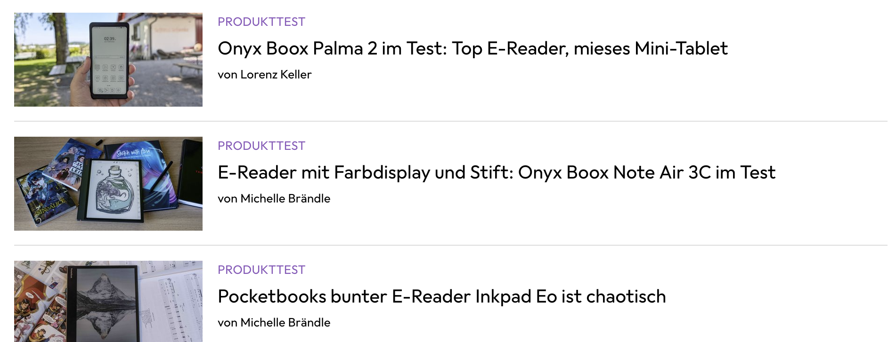
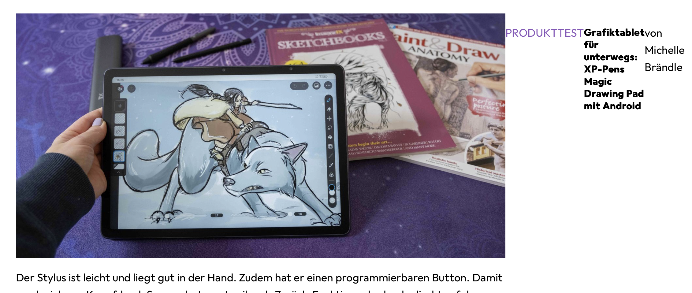
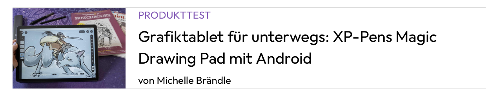
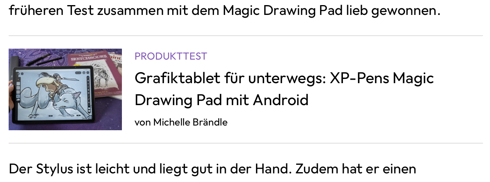

üî≠ Blog Page Preview
Verschiedene Ansichten
Die Blog Page Preview gibt es an verschiedenen Orten und Formaten:
Layout-Vergleich
| Ansicht | Mobile | Desktop |
|---|---|---|
| Einzelne Page |  |  |
| Listenansicht |  |  |
üí° Gl√ºck: Die √Ñnderungen sind minimal zwischen den Versionen. Wir k√∂nnen uns auf die Mobile konzentrieren und haben ev. die restlichen Varianten bereits mit abgebildet.
Flexbox implementieren
Lernressourcen
Damit wir das Design umsetzen können, nutzen wir Flexbox:
- Flexbox Froggy üê∏ (Interaktives Tutorial)
- CSS-Tricks Guide üìñ (Komplette Referenz)
Element-Auswahl
Starte auf dem Element, welches diese Blog Page umschliesst.

Utilities erweitern
Flexbox-Utilities hinzufügen
Damit wir Flexbox verwenden können, brauchen wir im utilities.css die folgenden Klassen:
/* Flexbox utilities */
.d-flex {
display: flex;
}
.flex-row {
flex-direction: row;
}
.flex-column {
flex-direction: column;
}
HTML-Implementation
Setze die beiden Klassen d-flex und flex-row auf dem HTML-Element article und prüfe, was passiert.

✅ Resultat: Die Text-Elemente sind schon mal rechts vom Bild. Eigentlich genau was wir möchten!
Bild-Spezialbehandlung
Problem
Das Bild benötigt relativ viele spezielle Behandlungen, damit es passt. Damit du nicht zu viele Klassen schreiben musst, erstelle eine flex-image-aside Klasse.
CSS-Implementation
.flex-image-aside {
flex: 0 1 30%; /* Kurzschreibweise für grow, shrink, basis */
max-width: 144px;
}
HTML-Anwendung
Vergib diese Klasse dem Bild:
<img src="bild.jpg" alt="Beschreibung" class="flex-image-aside">

Flex Direction anpassen
Von Row zu Column
Jetzt müssen wir im "rechten" Bereich wiederum statt nebeneinander das Ganze untereinander haben. Also von "row" zu "column".
Ahnst du schon, wie du das mit Flexbox machen kannst?
Container hinzufügen
Falls dir ein Container fehlt, um diese Elemente zu umschliessen, kannst du ein div HTML-Element nutzen. Diese eignen sich super, um vor allem CSS-Klassen zu setzen.
<article class="d-flex flex-row">
<img src="bild.jpg" alt="Beschreibung" class="flex-image-aside">
<div class="d-flex flex-column">
<h3>Titel</h3>
<p>Beschreibung</p>
</div>
</article>

Bildverzerrung beheben
Typisch Entwicklung: Man löst ein Problem und schafft sich neue... Wunderbar oder?
Problem: Das Bild ist jetzt komplett verzogen.
Lösung: object-fit: cover
.flex-image-aside {
flex: 0 1 30%; /* Kurzschreibweise für grow, shrink, basis */
max-width: 144px;
object-fit: cover; /* Verhindert Verzerrung */
}
Spacing-Optimierungen
Jetzt stören noch die Abstände oben / unten zwischen den Texten sowie sind Bild und Text zu nah aneinander.
Nutze deine Utility-Klassen um die Abstände anzupassen:
- mr-s für rechten Abstand am Bild
- my-0 um vertikale Margins zu entfernen
Danach müssen wir uns noch um die Schriftgrössen kümmern. Die sind jeweils 13 und 20. Zwischen dem Bild und dem Text gibt es einen Abstand von 16px.
 Als Margin-Top bei allen Texten sind 4px definiert. Wir brauchen also doch noch so was wie ein xxs.
Als Margin-Top bei allen Texten sind 4px definiert. Wir brauchen also doch noch so was wie ein xxs.
Anpassungen vornehmen
Damit alles klappt musst du noch die Fonts im fonts.css erweitern. Ausserdem brauchen wir neue Werte für die Font-Weights. Die fonts.css könnte nun so aussehen (die Werte wie 13, 20 kannst du auch durch small, large oder ähnlich ersetzen).
.font-13 {
font-size: 13px;
line-height: 20px;
}
.font-20 {
font-size: 20px;
line-height: 28px;
}
.font-weight-regular {
font-weight: 400;
}
.font-weight-medium {
font-weight: 500;
}
.font-weight-bold {
font-weight: 700;
}
Setzte dann die Klassen im Html alle. Achte darauf dass du die my-0 durch mt-s und mb-0 ersetzen musst, dort wo es ein mt-s gibt.

Nur noch ein paar Details
Jetzt fehlen uns nur noch diese hübschen Linien oben und unten. Das sind einfache Border die wir ebenfalls im utilities.css definieren können. Auch hier könnten die Farben und Dicken jeweils über Variablen ausgelagert werden.
.border-top {
border-top: 1px solid #ddd;
}
.border-bottom {
border-bottom: 1px solid #ddd;
}

Jetzt sind die Linien noch zu nah. Das können wir mit Padding korrigieren, da eine Border zwischen padding und Margin liegt.

Gemäss Vorlag gibt es ein Padding oben und unten von 16px. Erweitere deine utilitites.css mit Paddings und setze danach die Klassen ein.
Da wir für margin und padding die selben Werte nutzen, legen wir sie gleich zusammen in den Variablen zu spaces und nutzen im utilties.css dann dieselbe Variable für Margin und Padding Angaben.
Variables.css
/* general spaces variables */
:root {
--space-xxs: 4px;
--space-xs: 12px;
--space-s: 16px;
--space-m: 24px;
--space-l: 32px;
--space-xl: 40px;
--space-xxl: 64px;
}
Utilities.css
/* margin-top utilities */
.mt-0{
margin-top: 0;
}
.mt-xxs {
margin-top: var(--space-xxs);
}
.mt-xs {
…
…
/* padding-top utilities */
.pt-0 {
padding-top: 0;
}
.pt-xxs {
padding-top: var(--space-xxs);
}
…
…
Setze dann py-s auf das Article Element

Fleissarbeit…
Jetzt hast du alle Grundlagen im CSS, um all die Blog Page Previews zu gestalten. Gehe durch jede Stelle in der Index.html Seite durch, erg√§nze die Klassen und es sollte soweit passen. F√ºr Desktop k√∂nnte man das Bild noch etwas breiter machen. Aber das ist deine Wahl ob du das noch machen m√∂chtest üòä Viel Erfolg!
Ps. Du findest die fertige Version auf Github https://github.com/rekoch/webEngineerDgEditors/tree/main/public/02_html_css/08_blog_page_preview